import pandas as pd
import datetime
from datetime import date, timedelta
import numpy as np
import requests
from bs4 import BeautifulSoup
from io import StringIO
import re
import json
import time
import matplotlib.pyplot as plt
from scipy import stats
from plotnine import *
from sklearn.model_selection import train_test_split
from sklearn.linear_model import LogisticRegression
from sklearn.tree import DecisionTreeClassifier, DecisionTreeRegressor, plot_tree
from sklearn.ensemble import RandomForestClassifier, RandomForestRegressor
from sklearn.metrics import (
confusion_matrix, ConfusionMatrixDisplay,
accuracy_score, precision_score, recall_score, f1_score,
roc_curve, roc_auc_score, mean_squared_error, r2_score
)
import warnings
warnings.filterwarnings('ignore')
from collections import Counter
# Text processing
import nltk
from nltk.tokenize import word_tokenize, sent_tokenize
from nltk.corpus import stopwords
from nltk.util import ngrams
from nltk.sentiment import SentimentIntensityAnalyzer
nltk.download('punkt')
nltk.download('stopwords')
nltk.download('punkt_tab')
nltk.download('vader_lexicon')
# Word cloud
from wordcloud import WordCloud
# Topic modeling
from sklearn.feature_extraction.text import CountVectorizer, TfidfVectorizer
from sklearn.decomposition import LatentDirichletAllocationHomework 3 — More APIs, Classification, NLP
JSC370 (Winter 2026)
Learning Goals
- Use two more APIs, get familiar different datasets.
- Train and test logistic regression and random forest for classification.
- Conduct text analysis (natural language processing), topic modeling, and sentiment analysis.
Environment Setup
NASA API (Part 1)
The aim is to get more practice working with APIs and to conduct logistic and random forest classification. We will use and API maintained by NASA for retrieving information about near earth objects (NEOs), asteroids and comets that pass close to Earth. The documentation is available here (click on Asteroids - NeoWs). General information about NEOs can be found here. First you will need an API key for accessing the service. You can get one here - you will need to supply an email address, which can be either your UofT email or a personal email address.
1. (3 points)
The NASA NeoWs Feed API only allows pulls of 7 days of data at a time, so create a loop to pull all NEOs observed so far this year (i.e. start_date and end_date will be for a week but we want to get all asteroids since January 1, 2026).Your query will pull a list of asteroids based on their closest approach date and will have various attributes. Summarize the number of NEOs you pulled, the how many days had NEOs since January 1 of this year.
# NASA API configuration
BASE_URL = "https://api.nasa.gov/neo/rest/v1"
API_KEY = "gyPqOHBIVEUNEGCZ7qqccj8ohbFAGVANiPQpFvPy"
# Use feed endpoint to get all NEOs since January 1, 2026
url = f"{BASE_URL}/feed"
start_date = date(2026, 1, 1)
end_date = date(2026, 2, 25)
all_neos = []
days_with_neos = 0
window_start = start_date
while window_start <= end_date:
# The feed endpoint allows up to 7 days per request
window_end = min(window_start + timedelta(days=6), end_date)
# 1. Build query parameters
params = {
"api_key": API_KEY,
"start_date": window_start.strftime("%Y-%m-%d"),
"end_date": window_end.strftime("%Y-%m-%d"),
}
# 2. Make the GET request
response = requests.get(url, params=params, timeout=30)
print(f"Status Code: {response.status_code}")
print(f"Request URL: {response.url}")
if response.status_code != 200:
window_start = window_end + timedelta(days=1)
time.sleep(0.1)
continue
# 3. Parse the JSON response
try:
payload = response.json()
except ValueError:
window_start = window_end + timedelta(days=1)
time.sleep(0.1)
continue
# 4. Extract NEOs by day and append to all_neos
neos_by_day = payload.get("near_earth_objects", {})
for obs_date, neos in neos_by_day.items():
if neos:
days_with_neos += 1
for neo in neos:
neo["close_approach_date"] = obs_date
all_neos.extend(neos)
# 5. Move to the next 7-day window
window_start = window_end + timedelta(days=1)
time.sleep(0.1)
print(f"Total NEOs pulled since 2026-01-01: {len(all_neos)}")
print(f"Number of days from {start_date} to {end_date}: {(end_date - start_date).days + 1}")
print(f"Number of days with at least one NEO: {days_with_neos}")Status Code: 200
Request URL: https://api.nasa.gov/neo/rest/v1/feed?api_key=gyPqOHBIVEUNEGCZ7qqccj8ohbFAGVANiPQpFvPy&start_date=2026-01-01&end_date=2026-01-07
Status Code: 200
Request URL: https://api.nasa.gov/neo/rest/v1/feed?api_key=gyPqOHBIVEUNEGCZ7qqccj8ohbFAGVANiPQpFvPy&start_date=2026-01-08&end_date=2026-01-14
Status Code: 200
Request URL: https://api.nasa.gov/neo/rest/v1/feed?api_key=gyPqOHBIVEUNEGCZ7qqccj8ohbFAGVANiPQpFvPy&start_date=2026-01-15&end_date=2026-01-21
Status Code: 200
Request URL: https://api.nasa.gov/neo/rest/v1/feed?api_key=gyPqOHBIVEUNEGCZ7qqccj8ohbFAGVANiPQpFvPy&start_date=2026-01-22&end_date=2026-01-28
Status Code: 200
Request URL: https://api.nasa.gov/neo/rest/v1/feed?api_key=gyPqOHBIVEUNEGCZ7qqccj8ohbFAGVANiPQpFvPy&start_date=2026-01-29&end_date=2026-02-04
Status Code: 200
Request URL: https://api.nasa.gov/neo/rest/v1/feed?api_key=gyPqOHBIVEUNEGCZ7qqccj8ohbFAGVANiPQpFvPy&start_date=2026-02-05&end_date=2026-02-11
Status Code: 200
Request URL: https://api.nasa.gov/neo/rest/v1/feed?api_key=gyPqOHBIVEUNEGCZ7qqccj8ohbFAGVANiPQpFvPy&start_date=2026-02-12&end_date=2026-02-18
Status Code: 200
Request URL: https://api.nasa.gov/neo/rest/v1/feed?api_key=gyPqOHBIVEUNEGCZ7qqccj8ohbFAGVANiPQpFvPy&start_date=2026-02-19&end_date=2026-02-25
Total NEOs pulled since 2026-01-01: 899
Number of days from 2026-01-01 to 2026-02-25: 56
Number of days with at least one NEO: 56Summary:
Since 2026-01-01, by the end of 2026-02-25, 899 NEOs were pulled. From 2026-01-01 to 2026-02-25, there are 56 days, and 56 of those days had NEOs.
2. (5 points)
Extract information on estimated_diameter, is_potentially_hazardous_asteroid, miss_distance, and relative_velocity. Create a variable for avg_estimated_diameter (take the mean of min and max). Make a summary table of these variables, a correlation heatmap of the numeric variables, and create a stacked barplot of the number of asteroids by day, distinguishing those that are hazardous is_potentially_hazardous_asteroid.
extracted_rows = []
for neo in all_neos:
km_info = neo.get("estimated_diameter", {}).get("kilometers", {})
diameter_min = km_info.get("estimated_diameter_min")
diameter_max = km_info.get("estimated_diameter_max")
close_approach = neo.get("close_approach_data", [])
if close_approach:
approach_0 = close_approach[0]
miss_distance_km = approach_0.get("miss_distance", {}).get("kilometers")
relative_velocity_kps = approach_0.get("relative_velocity", {}).get("kilometers_per_second")
else:
miss_distance_km = None
relative_velocity_kps = None
extracted_rows.append({
"neo_id": neo.get("id"),
"neo_name": neo.get("name"),
"close_approach_date": neo.get("close_approach_date"),
"estimated_diameter_min_km": diameter_min,
"estimated_diameter_max_km": diameter_max,
"is_potentially_hazardous_asteroid": neo.get("is_potentially_hazardous_asteroid"),
"miss_distance_km": miss_distance_km,
"relative_velocity_km_s": relative_velocity_kps
})
neo_df = pd.DataFrame(extracted_rows)
# Convert numeric columns from strings to numbers
numeric_cols = [
"estimated_diameter_min_km",
"estimated_diameter_max_km",
"miss_distance_km",
"relative_velocity_km_s"
]
neo_df[numeric_cols] = neo_df[numeric_cols].apply(pd.to_numeric, errors="coerce")
# Create a new variable for the average estimated diameter
neo_df["avg_estimated_diameter"] = (
neo_df["estimated_diameter_min_km"] + neo_df["estimated_diameter_max_km"]
) / 2
neo_df_derived = neo_df[[
"neo_id",
"neo_name",
"close_approach_date",
"is_potentially_hazardous_asteroid",
"miss_distance_km",
"relative_velocity_km_s",
"avg_estimated_diameter"
]].copy()
# Encode hazardous asteroid indicator as 0/1 for numeric analysis
neo_df_derived["is_potentially_hazardous"] = neo_df_derived["is_potentially_hazardous_asteroid"].astype(int)
neo_df_derived = neo_df_derived.drop(columns=["is_potentially_hazardous_asteroid"])
neo_df_derived.head()| neo_id | neo_name | close_approach_date | miss_distance_km | relative_velocity_km_s | avg_estimated_diameter | is_potentially_hazardous | |
|---|---|---|---|---|---|---|---|
| 0 | 2026663 | 26663 (2000 XK47) | 2026-01-07 | 2.025407e+07 | 17.184795 | 1.003558 | 1 |
| 1 | 54105509 | (2021 AM5) | 2026-01-07 | 2.464357e+07 | 10.693029 | 0.040137 | 0 |
| 2 | 54248949 | (2022 EO) | 2026-01-07 | 4.104900e+07 | 7.051860 | 0.005439 | 0 |
| 3 | 54317205 | (2022 UE3) | 2026-01-07 | 4.570810e+07 | 8.209910 | 0.051469 | 0 |
| 4 | 54417170 | (2023 XM15) | 2026-01-07 | 5.819989e+06 | 6.889580 | 0.061879 | 0 |
summary_vars = [
"avg_estimated_diameter",
"miss_distance_km",
"relative_velocity_km_s",
"is_potentially_hazardous",
]
summary_table = (
neo_df_derived[summary_vars]
.describe()
.T[["count", "mean", "std", "min", "25%", "50%", "75%", "max"]]
.rename(columns={"50%": "median"})
)
summary_table["missing"] = neo_df_derived[summary_vars].isna().sum()
summary_table = summary_table.reset_index().rename(columns={"index": "variable"})
summary_table| variable | count | mean | std | min | 25% | median | 75% | max | missing | |
|---|---|---|---|---|---|---|---|---|---|---|
| 0 | avg_estimated_diameter | 899.0 | 7.812952e-02 | 1.438885e-01 | 0.001660 | 1.984484e-02 | 3.658833e-02 | 7.436056e-02 | 2.165422e+00 | 0 |
| 1 | miss_distance_km | 899.0 | 2.442790e+07 | 2.254798e+07 | 43043.346341 | 4.737708e+06 | 1.672134e+07 | 4.126669e+07 | 7.472261e+07 | 0 |
| 2 | relative_velocity_km_s | 899.0 | 1.232559e+01 | 6.471498e+00 | 1.220285 | 7.436607e+00 | 1.127679e+01 | 1.608546e+01 | 4.118599e+01 | 0 |
| 3 | is_potentially_hazardous | 899.0 | 3.781980e-02 | 1.908664e-01 | 0.000000 | 0.000000e+00 | 0.000000e+00 | 0.000000e+00 | 1.000000e+00 | 0 |
heatmap_vars = [
"avg_estimated_diameter",
"miss_distance_km",
"relative_velocity_km_s",
]
corr_matrix = neo_df_derived[heatmap_vars].corr()
corr_long = (
corr_matrix
.reset_index()
.melt(id_vars="index", var_name="variable_2", value_name="correlation")
.rename(columns={"index": "variable_1"})
)
corr_long["corr_label"] = corr_long["correlation"].round(2)
(
ggplot(corr_long, aes(x="variable_1", y="variable_2", fill="correlation"))
+ geom_tile()
+ geom_text(aes(label="corr_label"), size=8, color="black")
+ scale_fill_gradient2(low="#2166ac", mid="white", high="#b2182b", midpoint=0)
+ labs(
title="Correlation Heatmap of NEO Numeric Variables",
x="Numerical Features",
y="Numerical Features",
fill="Correlation"
)
+ theme_minimal()
+ theme(axis_text_x=element_text(angle=45, ha="right"))
)
plot_df = neo_df_derived.copy()
plot_df["close_approach_date"] = pd.to_datetime(plot_df["close_approach_date"])
plot_df["hazard_status"] = np.where(
plot_df["is_potentially_hazardous"] == 1,
"Hazardous",
"Not hazardous"
)
(
ggplot(plot_df, aes(x="close_approach_date", fill="hazard_status"))
+ geom_bar(position="stack")
+ labs(
title="Number of NEOs by Day (Stacked by Hazard Status)",
x="Close approach date",
y="Number of asteroids",
fill="Hazard status"
)
+ scale_fill_manual(values=["#1f77b4", "#d62728"])
+ theme_minimal()
+ theme(axis_text_x=element_text(angle=45, ha="right"))
)
3. (6 points)
Are larger NEOs more hazardous? Are faster NEOs more hazardous? Create two histograms to explore these questions, and conduct two-sample t-tests. Is the relationship between diameter and velocity different between hazardous and non-hazardous NEOs? Create a scatterplot to explore this. Summarize your results.
q3_df = neo_df_derived.copy()
q3_df["hazard_status"] = np.where(
q3_df["is_potentially_hazardous"] == 1,
"Hazardous",
"Not hazardous"
)
(
ggplot(
q3_df,
aes(x="avg_estimated_diameter", fill="hazard_status")
)
+ geom_histogram(position="identity", alpha=0.6, bins=35)
+ labs(
title="Distribution of Average Estimated Diameter by Hazard Status",
x="Average estimated diameter (km)",
y="Count",
fill="Hazard status"
)
+ scale_fill_manual(values=["#1f77b4", "#d62728"])
+ theme_minimal()
)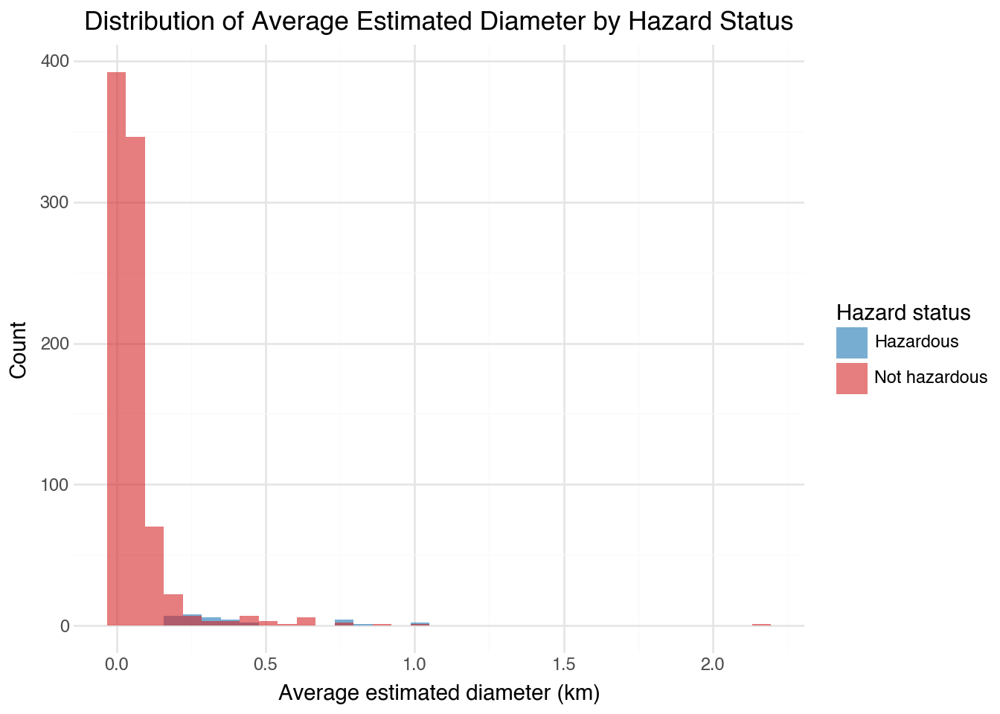
(
ggplot(
q3_df,
aes(x="relative_velocity_km_s", fill="hazard_status")
)
+ geom_histogram(position="identity", alpha=0.6, bins=35)
+ labs(
title="Distribution of Relative Velocity by Hazard Status",
x="Relative velocity (km/s)",
y="Count",
fill="Hazard status"
)
+ scale_fill_manual(values=["#1f77b4", "#d62728"])
+ theme_minimal()
)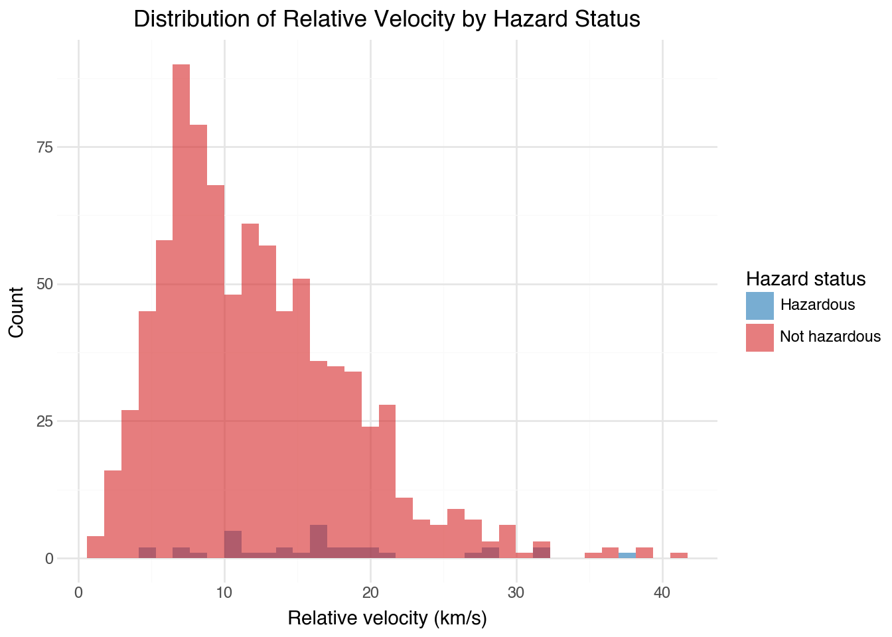
# 1. Split data into hazardous and non-hazardous groups
haz = neo_df_derived[neo_df_derived["is_potentially_hazardous"] == 1]
non_haz = neo_df_derived[neo_df_derived["is_potentially_hazardous"] == 0]
# 2. Run two-sample t-test for average estimated diameter (Welch's t-test)
diam_haz = haz["avg_estimated_diameter"]
diam_non_haz = non_haz["avg_estimated_diameter"]
ttest_diameter = stats.ttest_ind(diam_haz, diam_non_haz, equal_var=False)
# 3. Run two-sample t-test for relative velocity (Welch's t-test)
vel_haz = haz["relative_velocity_km_s"]
vel_non_haz = non_haz["relative_velocity_km_s"]
ttest_velocity = stats.ttest_ind(vel_haz, vel_non_haz, equal_var=False)
# 4. Summarize test outputs in one table
ttest_results = pd.DataFrame({
"variable": ["avg_estimated_diameter", "relative_velocity_km_s"],
"mean_hazardous": [diam_haz.mean(), vel_haz.mean()],
"mean_non_hazardous": [diam_non_haz.mean(), vel_non_haz.mean()],
"n_hazardous": [len(diam_haz), len(vel_haz)],
"n_non_hazardous": [len(diam_non_haz), len(vel_non_haz)],
"t_statistic": [ttest_diameter.statistic, ttest_velocity.statistic],
"p_value": [ttest_diameter.pvalue, ttest_velocity.pvalue],
})
ttest_results["significant_0.05"] = ttest_results["p_value"] < 0.05
display(ttest_results.round(6))| variable | mean_hazardous | mean_non_hazardous | n_hazardous | n_non_hazardous | t_statistic | p_value | significant_0.05 | |
|---|---|---|---|---|---|---|---|---|
| 0 | avg_estimated_diameter | 0.397224 | 0.065587 | 34 | 865 | 7.920825 | 0.00000 | True |
| 1 | relative_velocity_km_s | 16.794644 | 12.149927 | 34 | 865 | 3.369157 | 0.00186 | True |
Summary:
- According to the Distribution of Average Estimated Diameter by Hazard Status histogram, visually larger NEOs look more hazardous. The two-sample t-test confirms this statistically because the mean of the average estimated diameter for hazardous NEOs is significantly larger than the mean of the average estimated diameter for non-hazardous NEOs with p-value < 0.05.
- While the relative velocity distributions do not appear vastly different visually, the two-sample t-test confirms this statistically because the mean of the relative velocity for hazardous NEOs is significantly larger than the mean of the relative velocity for non-hazardous NEOs with p-value < 0.05.
scatter_df = neo_df_derived.copy()
scatter_df["hazard_status"] = np.where(
scatter_df["is_potentially_hazardous"] == 1,
"Hazardous",
"Not hazardous"
)
(
ggplot(
scatter_df,
aes(x="avg_estimated_diameter", y="relative_velocity_km_s", color="hazard_status")
)
+ geom_point(alpha=0.6, size=2)
+ geom_smooth(method="lm", se=False)
+ labs(
title="Diameter vs Relative Velocity by Hazard Status",
x="Average estimated diameter (km)",
y="Relative velocity (km/s)",
color="Hazard status"
)
+ scale_color_manual(values=["#1f77b4", "#d62728"])
+ theme_minimal()
)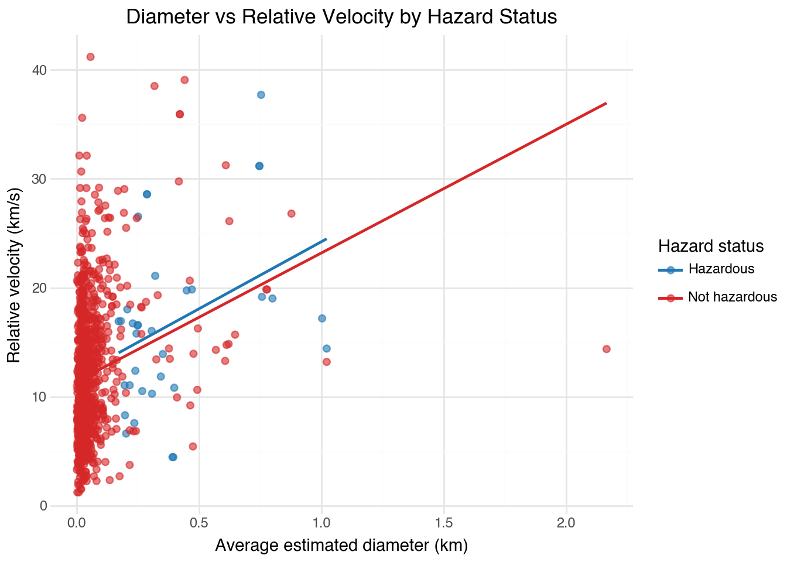
Summary:
- According to the Diameter vs Relative Velocity by Hazard Status scatterplot, the relationship between diameter and velocity does not appear substantially different between hazardous and non-hazardous NEOs. The trend lines for both groups show a positive correlation, indicating that as diameter increases, relative velocity tends to increase for all NEOs.
4. (5 points)
Split the data into 70% train and 30% test, and fit a logistic regression model on train to see if we can predict on test whether an asteroid is hazardous based on its attributes (include diameter, velocity, miss distance). Summarize and interpret the results (include a confusion matrix, accuracy, precision, recall, and F1; plot the ROC curve).
# 1. Set up predictors and target
feature_cols = ["avg_estimated_diameter", "relative_velocity_km_s", "miss_distance_km"]
X_class = neo_df_derived[feature_cols]
y_class = neo_df_derived["is_potentially_hazardous"]
# 2. Train/test split (70/30) with random_state=65
X_train_c, X_test_c, y_train_c, y_test_c = train_test_split(
X_class, y_class, test_size=0.30, random_state=65, stratify=y_class
)
print(f"Training set size: {X_train_c.shape[0]}")
print(f"Testing set size: {X_test_c.shape[0]}")
print("\nTraining target proportions:")
print(y_train_c.value_counts(normalize=True).sort_index())
# 3. Fit logistic regression
log_reg_c = LogisticRegression(max_iter=1000)
log_reg_c.fit(X_train_c, y_train_c)
# 4. Predict on test set
y_pred_c = log_reg_c.predict(X_test_c)
y_prob_c = log_reg_c.predict_proba(X_test_c)[:, 1]
# 5. Test metrics + confusion matrix display
test_acc_c = accuracy_score(y_test_c, y_pred_c)
test_precision_c = precision_score(y_test_c, y_pred_c, zero_division=0)
test_recall_c = recall_score(y_test_c, y_pred_c, zero_division=0)
test_f1_c = f1_score(y_test_c, y_pred_c, zero_division=0)
test_auc_c = roc_auc_score(y_test_c, y_prob_c)
print(f"Test Accuracy: {test_acc_c:.4f}")
print(f"Test Precision: {test_precision_c:.4f}")
print(f"Test Recall: {test_recall_c:.4f}")
print(f"Test F1: {test_f1_c:.4f}")
print(f"Test ROC AUC: {test_auc_c:.4f}")
class_labels = [0, 1]
cm = confusion_matrix(y_test_c, y_pred_c, labels=class_labels)
disp = ConfusionMatrixDisplay(confusion_matrix=cm, display_labels=class_labels)
disp.plot(cmap="Blues")
plt.title("Confusion Matrix - Logistic Regression")
plt.show()Training set size: 629
Testing set size: 270
Training target proportions:
is_potentially_hazardous
0 0.961844
1 0.038156
Name: proportion, dtype: float64
Test Accuracy: 0.9630
Test Precision: 0.0000
Test Recall: 0.0000
Test F1: 0.0000
Test ROC AUC: 0.2581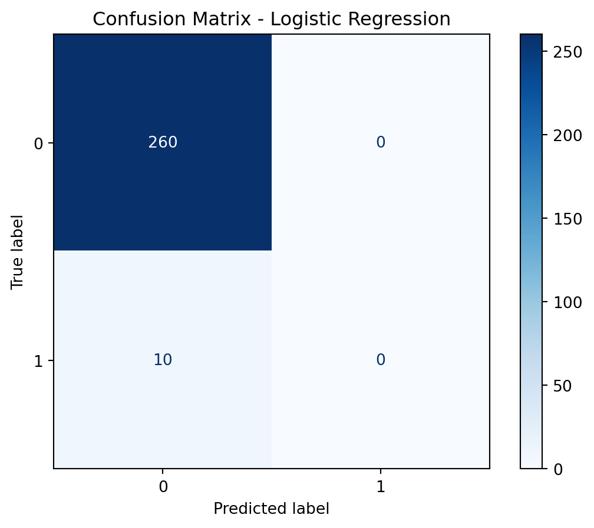
fpr, tpr, _ = roc_curve(y_test_c, y_prob_c)
roc_df = pd.DataFrame({"fpr": fpr, "tpr": tpr})
(
ggplot(roc_df, aes(x="fpr", y="tpr"))
+ geom_line(color="#1f77b4", size=1.1)
+ geom_abline(intercept=0, slope=1, linetype="dashed", color="gray")
+ labs(
title="ROC Curve - Logistic Regression",
x="False Positive Rate",
y="True Positive Rate"
)
+ theme_minimal()
)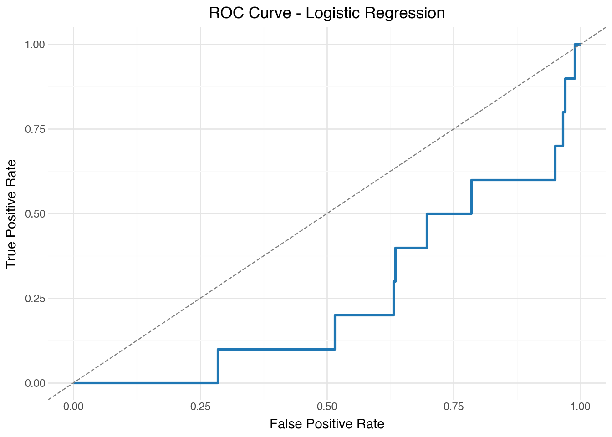
Summary:
- Class Imbalance: The training set is highly imbalanced, with hazardous NEOs representing only approximately 4% of the data. A naive model predicting “non-hazardous” for every instance would achieve approximately 96% accuracy by default.
- Confusion Matrix: The logistic regression model correctly identified all 260 non-hazardous NEOs (True Negatives) but missed all 10 hazardous NEOs (False Negatives), resulting in 0 True Positives. This proves that the model performed as expected and failed to detect hazardous NEOs.
- Metrics Interpretation: The high accuracy (96.23%) is misleading due to the imbalance and naiveness. The **precision, recall, and F1 scores of 0.00 accurately reflect that the model failed completely at its primary task: detecting hazardous asteroids.
- ROC AUC: The ROC AUC of 0.2581 suggests the model has some underlying ability to distinguish classes (better than random guessing at 0.5). The ROC curve confirms this potential: it rises above the diagonal random-guess line, showing that the model assigns higher probabilities to hazardous asteroids on average. However, at the default threshold, the True Positive Rate is 0, meaning no hazardous asteroids are caught.
5. (5 points)
Repeat 4 but using random forest. Summarize and include a comparison of your results in 4.
# 1. Fit random forest on the same train/test split used in Q4
rf_class = RandomForestClassifier(
n_estimators=500,
random_state=65
)
rf_class.fit(X_train_c, y_train_c)
# 2. Predict on test set
y_pred_rf_c = rf_class.predict(X_test_c)
y_prob_rf_c = rf_class.predict_proba(X_test_c)[:, 1]
# 3. Evaluate random forest performance
rf_test_acc_c = accuracy_score(y_test_c, y_pred_rf_c)
rf_test_precision_c = precision_score(y_test_c, y_pred_rf_c, zero_division=0)
rf_test_recall_c = recall_score(y_test_c, y_pred_rf_c, zero_division=0)
rf_test_f1_c = f1_score(y_test_c, y_pred_rf_c, zero_division=0)
rf_test_auc_c = roc_auc_score(y_test_c, y_prob_rf_c)
print(f"RF Test Accuracy: {rf_test_acc_c:.4f}")
print(f"RF Test Precision: {rf_test_precision_c:.4f}")
print(f"RF Test Recall: {rf_test_recall_c:.4f}")
print(f"RF Test F1: {rf_test_f1_c:.4f}")
print(f"RF Test ROC AUC: {rf_test_auc_c:.4f}")
class_labels = [0, 1]
rf_cm = confusion_matrix(y_test_c, y_pred_rf_c, labels=class_labels)
rf_disp = ConfusionMatrixDisplay(confusion_matrix=rf_cm, display_labels=class_labels)
rf_disp.plot(cmap="Greens")
plt.title("Confusion Matrix - Random Forest")
plt.show()RF Test Accuracy: 0.9741
RF Test Precision: 0.8000
RF Test Recall: 0.4000
RF Test F1: 0.5333
RF Test ROC AUC: 0.9898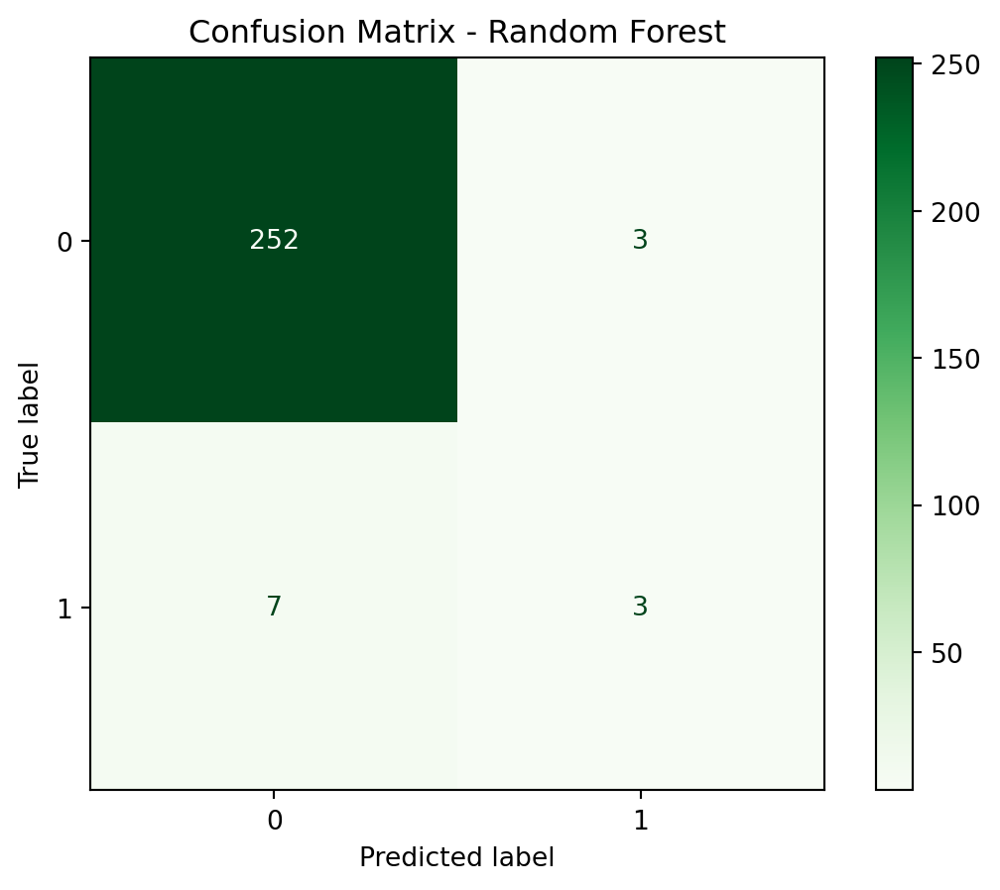
rf_fpr, rf_tpr, _ = roc_curve(y_test_c, y_prob_rf_c)
rf_roc_df = pd.DataFrame({"fpr": rf_fpr, "tpr": rf_tpr})
(
ggplot(rf_roc_df, aes(x="fpr", y="tpr"))
+ geom_line(color="#2ca02c", size=1.1)
+ geom_abline(intercept=0, slope=1, linetype="dashed", color="gray")
+ labs(
title="ROC Curve - Random Forest",
x="False Positive Rate",
y="True Positive Rate"
)
+ theme_minimal()
)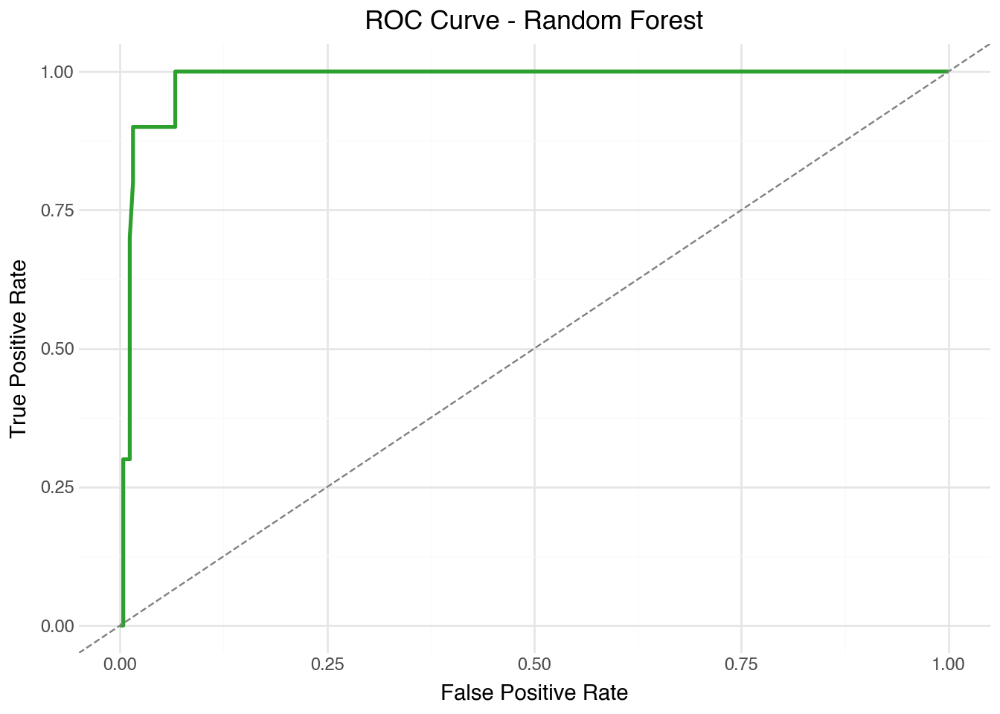
comparison_df = pd.DataFrame({
"model": ["Logistic Regression", "Random Forest"],
"accuracy": [test_acc_c, rf_test_acc_c],
"precision": [test_precision_c, rf_test_precision_c],
"recall": [test_recall_c, rf_test_recall_c],
"f1": [test_f1_c, rf_test_f1_c],
"roc_auc": [test_auc_c, rf_test_auc_c],
})
display(comparison_df.round(4))| model | accuracy | precision | recall | f1 | roc_auc | |
|---|---|---|---|---|---|---|
| 0 | Logistic Regression | 0.9630 | 0.0 | 0.0 | 0.0000 | 0.2581 |
| 1 | Random Forest | 0.9741 | 0.8 | 0.4 | 0.5333 | 0.9898 |
Summary:
- Confusion Matrix: Out of the 10 actual hazardous NEOs in the test set, the Random Forest model correctly identified 4 (True Positives) but missed 6 (False Negatives). It correctly identified 259 non-hazardous NEOs (True Negatives) while incorrectly labeling 1 non-hazardous NEO as hazardous (False Positives).
- Metrics Interpretation: The model achieved an accuracy of 97.41%, a precision of 0.8000, a recall of 0.4000, and an F1 score of 0.5333. Because 80% of the asteroids it flagged as hazardous were actually hazardous, it demonstrates good reliability in its positive predictions, though the recall (40%) means it is still missing more than half of the dangerous asteroids.
- ROC Curve: The ROC curve rises sharply toward the top-left corner, yielding an exceptionally high ROC AUC of 0.9898. This indicates the model has an excellent underlying ability to separate hazardous from non-hazardous NEOs based on their predicted probabilities.
- Comparison with Logistic Regression: The Random Forest model performed significantly better than the Logistic Regression model. While Logistic Regression failed to identify any hazardous NEOs (Precision=0.0, Recall=0.0), the Random Forest model successfully identified 4 hazardous NEOs with a precision of 0.8000 and a recall of 0.4000. The Random Forest’s ROC AUC of 0.9898 is also much higher than the Logistic Regression’s, confirming its superior predictive power for this imbalanced dataset.
CFPB API (Part 2)
The Consumer Financial Protection Bureau maintains a database of customer complaints. We will use natural language processing to see if there are any trends in the reported consumer’s narrative description of the complaints. The data can be acquired here. We will use the API to get data.
6. (3 points)
Use the API to get consumer complaint narratives (i.e. has_narrative) from the last 3 months (i.e. date_received_min is November 1, 2025) across all product categories. I suggest using the csv format. Please note this is a very large dataset so may take some time to query (you can use a longer timeout). Once you have pulled the data, summarize the dimensions and variables. Create a bar chart of complaint counts by product category.
# CFPB Consumer Complaint Database API endpoint
CFPB_BASE_URL = "https://www.consumerfinance.gov/data-research/consumer-complaints/search/api/v1/"
# Pull complaints with narratives from the last 3 months (from 2025-11-01)
cfpb_params = {
"format": "csv",
"date_received_min": "2025-11-01",
"has_narrative": "true",
"no_aggs": "true",
"field": "all",
"sort": "created_date_desc",
"size": 250000,
}
# Make the GET request
cfpb_response = requests.get(CFPB_BASE_URL, params=cfpb_params, timeout=120)
print(f"Status Code: {cfpb_response.status_code}")
print(f"Request URL: {cfpb_response.url}")
cfpb_response.raise_for_status()
# 3. Read CSV payload into DataFrame
cfpb_df = pd.read_csv(StringIO(cfpb_response.text))
cfpb_df.head()Status Code: 200
Request URL: https://www.consumerfinance.gov/data-research/consumer-complaints/search/api/v1/?format=csv&date_received_min=2025-11-01&has_narrative=true&no_aggs=true&field=all&sort=created_date_desc&size=250000| Date received | Product | Sub-product | Issue | Sub-issue | Consumer complaint narrative | Company public response | Company | State | ZIP code | Tags | Consumer consent provided? | Submitted via | Date sent to company | Company response to consumer | Timely response? | Consumer disputed? | Complaint ID | |
|---|---|---|---|---|---|---|---|---|---|---|---|---|---|---|---|---|---|---|
| 0 | 12/22/25 | Credit card | Store credit card | Getting a credit card | Card opened without my consent or knowledge | A Macy 's credit card was opened under my name... | Company has responded to the consumer and the ... | CITIBANK, N.A. | TX | 752XX | NaN | Consent provided | Web | 12/22/25 | Closed with explanation | Yes | NaN | 18219388 |
| 1 | 11/10/25 | Credit reporting or other personal consumer re... | Credit reporting | Incorrect information on your report | Information belongs to someone else | I am formally disputing inaccurate information... | Company has responded to the consumer and the ... | TRANSUNION INTERMEDIATE HOLDINGS, INC. | NY | 10466 | NaN | Consent provided | Web | 11/10/25 | Closed with non-monetary relief | Yes | NaN | 17120972 |
| 2 | 12/22/25 | Student loan | Private student loan | Issue where my lender is my school | Issues with fees connected to the loan | My spouse and I attended XXXX XXXX XXXX from X... | NaN | Maximus Federal Services, Inc. | TX | 75243 | NaN | Consent provided | Web | 12/22/25 | Closed with explanation | Yes | NaN | 18232083 |
| 3 | 11/12/25 | Student loan | Federal student loan servicing | Dealing with your lender or servicer | Trouble with how payments are being handled | In XX/XX/year>, I received a letter stating my... | NaN | Maximus Federal Services, Inc. | VA | 241XX | NaN | Consent provided | Web | 12/09/25 | Closed with explanation | Yes | NaN | 17874558 |
| 4 | 11/13/25 | Credit reporting or other personal consumer re... | Credit reporting | Incorrect information on your report | Information belongs to someone else | I am disputing the following inquiries on my E... | NaN | EQUIFAX, INC. | NC | 27215 | NaN | Consent provided | Web | 11/13/25 | Closed with non-monetary relief | Yes | NaN | 17234963 |
print(f"CFPB dataset dimensions: {cfpb_df.shape}")
print(f"Number of variables: {len(cfpb_df.columns)}")
print(cfpb_df.info())CFPB dataset dimensions: (136104, 18)
Number of variables: 18
<class 'pandas.core.frame.DataFrame'>
RangeIndex: 136104 entries, 0 to 136103
Data columns (total 18 columns):
# Column Non-Null Count Dtype
--- ------ -------------- -----
0 Date received 136104 non-null object
1 Product 136104 non-null object
2 Sub-product 136104 non-null object
3 Issue 136104 non-null object
4 Sub-issue 130952 non-null object
5 Consumer complaint narrative 136104 non-null object
6 Company public response 75728 non-null object
7 Company 136104 non-null object
8 State 135725 non-null object
9 ZIP code 136104 non-null object
10 Tags 8698 non-null object
11 Consumer consent provided? 136104 non-null object
12 Submitted via 136104 non-null object
13 Date sent to company 136104 non-null object
14 Company response to consumer 136104 non-null object
15 Timely response? 136104 non-null object
16 Consumer disputed? 0 non-null float64
17 Complaint ID 136104 non-null int64
dtypes: float64(1), int64(1), object(16)
memory usage: 18.7+ MB
Noneproduct_counts = (
cfpb_df["Product"]
.value_counts()
.reset_index()
)
product_counts.columns = ["Product", "Count"]
(
ggplot(product_counts, aes(x="reorder(Product, Count)", y="Count"))
+ geom_col(fill="#4C78A8")
+ coord_flip()
+ labs(
title="CFPB Complaint Counts by Product Category",
x="Product category",
y="Number of complaints"
)
+ theme_minimal()
)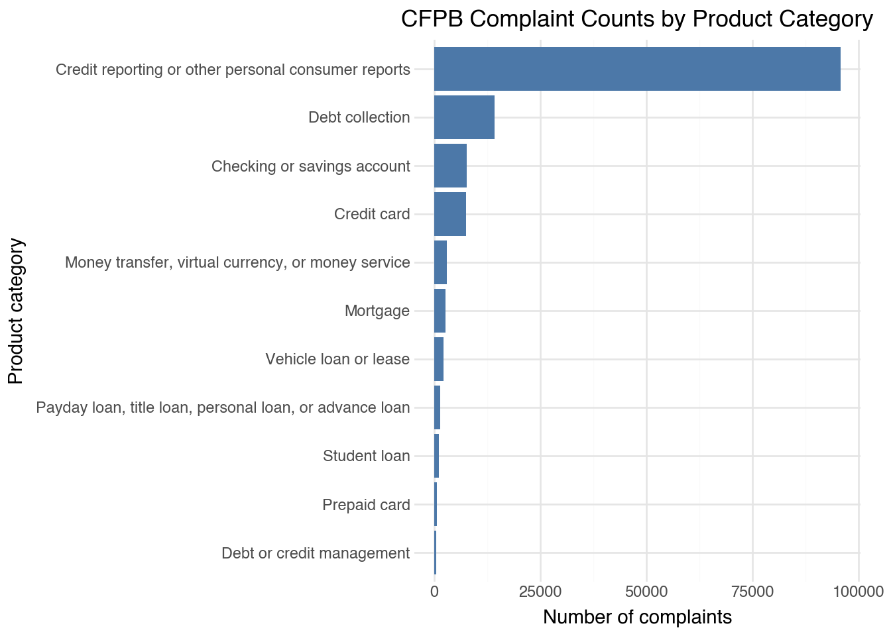
Summary:
- The dataset contains 136104 customer complaint narratives since November 1, 2025 with 18 features each.
- According to CFPB Complaint Counts by Product Category Since November 1, 2025 bar chart, the most frequent product category with complaints is “Credit reporting or other personal consumer reports”. Note, this product category have way more complaints than all the other product categories.
7. (2 points)
Tokenize the complaints (consumer complaint narrative) and count the number of tokens. Make a plot of the top 20 tokens. Summarize.
# Tokenize all complaint narratives
def tokenize_text(text):
if pd.isna(text):
return []
return word_tokenize(text.lower())
all_tokens = []
for text in cfpb_df["Consumer complaint narrative"]:
all_tokens.extend(tokenize_text(text))
# Count total tokens
total_tokens = len(all_tokens)
print(f"Total number of tokens: {total_tokens}")
# Count token frequencies and get top 20
token_counts = Counter(all_tokens)
top_20_tokens = token_counts.most_common(20)
top_20_tokens_df = pd.DataFrame(top_20_tokens, columns=["word", "count"])
display(top_20_tokens_df)
# Plot top 20 tokens
(
ggplot(top_20_tokens_df, aes(x="reorder(word, count)", y="count"))
+ geom_bar(stat="identity", fill="steelblue")
+ coord_flip()
+ labs(
title="Top 20 Most Frequent Tokens in Complaint Narratives",
x="Word",
y="Frequency"
)
+ theme_minimal()
+ theme(figure_size=(10, 6))
)Total number of tokens: 27766456| word | count | |
|---|---|---|
| 0 | xxxx | 1785184 |
| 1 | . | 1080805 |
| 2 | , | 999833 |
| 3 | the | 917171 |
| 4 | and | 714198 |
| 5 | to | 637825 |
| 6 | i | 566255 |
| 7 | of | 489382 |
| 8 | a | 458555 |
| 9 | my | 438223 |
| 10 | ) | 352004 |
| 11 | ( | 348875 |
| 12 | credit | 307726 |
| 13 | : | 302947 |
| 14 | this | 279456 |
| 15 | that | 262768 |
| 16 | account | 233645 |
| 17 | is | 229221 |
| 18 | not | 217619 |
| 19 | on | 187478 |
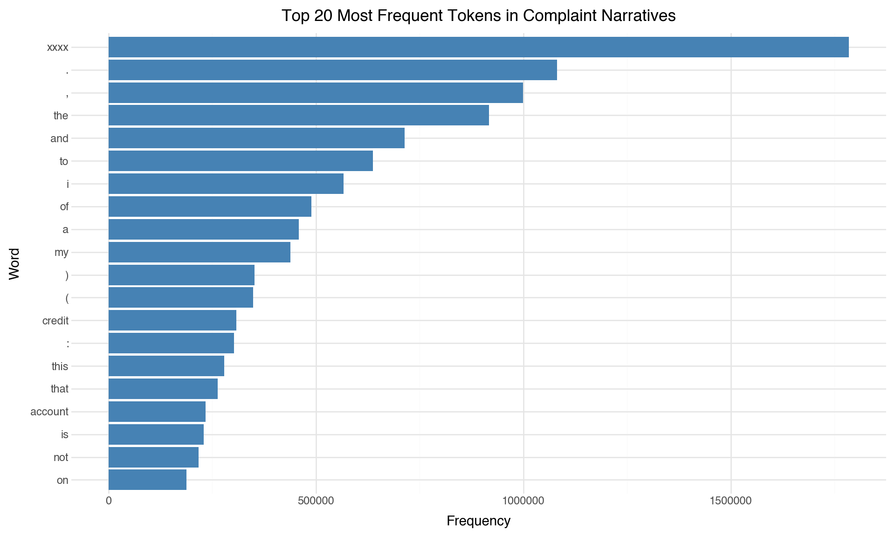
Summary:
- There are 27766456 tokens in total in the customer complaint narratives since November 1, 2025.
- It is very obvious that punctuations, stopwords, and privacy mask words like “XXXX” are the most frequent words in the data. Without removing them, we cannot discover any meaningful themes and trends in the customer complaint narratives.
8. (3 points)
Remove stopwords, including numeric tokens, special characters combinations, and customize to remove any other words that look strange. After cleaning, what words appear as the most frequent? Create a plot of the 20 most common complaint tokens in your cleaned data and summarize.
# Get English stopwords
stop_words = set(stopwords.words("english"))
# Add custom stopwords
custom_stopwords = {"xxxx", "xxx", "xx", "x"}
# Combine stopwords
stop_words = stop_words.union(custom_stopwords)
# Filter tokens
cleaned_tokens = [
token for token in all_tokens
if token not in stop_words
and not token.isdigit()
and len(token) > 2
and token.isalpha()
]
# Count cleaned tokens
print(f"Number of cleaned tokens: {len(cleaned_tokens)}")
# Count cleaned tokens frequencies and get top 20
cleaned_counts = Counter(cleaned_tokens)
top_20_cleaned = cleaned_counts.most_common(20)
top_20_cleaned_df = pd.DataFrame(top_20_cleaned, columns=["word", "count"])
# Plot top 20 cleaned tokens
(
ggplot(top_20_cleaned_df, aes(x="reorder(word, count)", y="count"))
+ geom_bar(stat="identity", fill="tomato")
+ coord_flip()
+ labs(
title="Top 20 Most Frequent Tokens (After Cleaning)",
x="Word",
y="Frequency"
)
+ theme_minimal()
+ theme(figure_size=(10, 6))
)Number of cleaned tokens: 11781517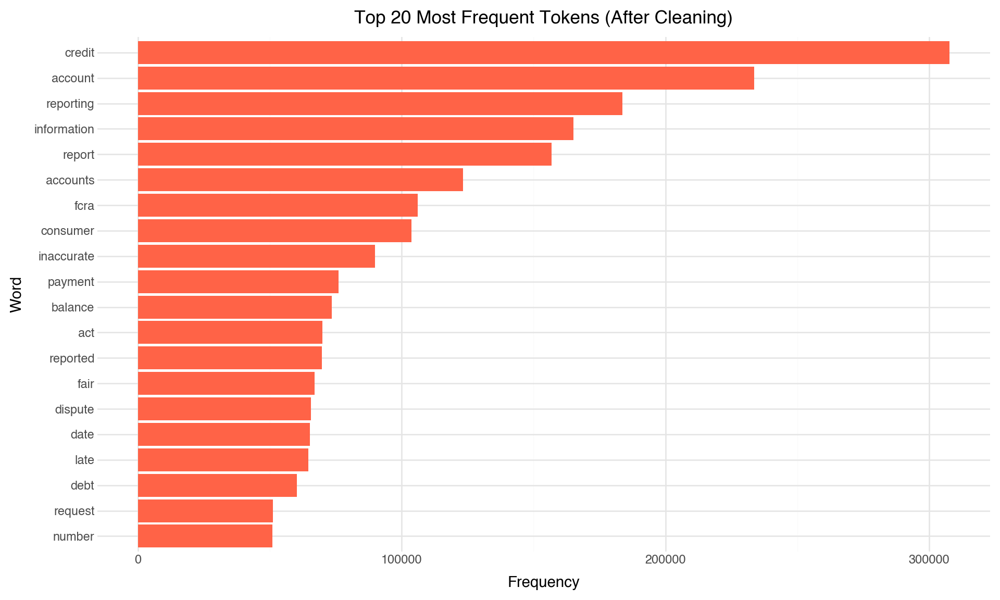
Summary:
- After removing english stopwords, punctuations, and custom noise tokens (e.g., “xxxx”), the most frequent words are “credit”, “account”, and “reporting”.
- This aligns with the earlier finding that “Credit reporting or other personal consumer reports” is the dominant product category in the customer complaint narratives dataset. The top words clearly reflect themes of credit reporting disputes, account information inaccuracy, and consumer identity issues, and more.
- The cleaned token list is much more informative than the raw list and more meaningful in terms of complaints.
9. (10 points)
Use Latent Dirichlet Allocation (LDA) topic modeling to discover topics in the complaint narratives. First, use perplexity and log-likelihood on a held-out sample of 50,000 to evaluate different numbers of topics (e.g., 2 to 10) and select an appropriate number. Plot perplexity and log-likelihood as a function of the number of topics. Then fit an LDA model with your chosen number of topics. Display the top 10 words for each topic. Do the discovered topics align with the actual product categories? Create a visualization to compare. Summarize and interpret your findings.
# Prepare text and product data
lda_df = cfpb_df[["Consumer complaint narrative", "Product"]].dropna(
subset=["Consumer complaint narrative", "Product"]
).copy()
lda_df["Consumer complaint narrative"] = lda_df["Consumer complaint narrative"].astype(str)
print(f"Total documents available for LDA: {lda_df.shape[0]}")
# Create held-out sample of 50,000
heldout_n = 50000
if lda_df.shape[0] <= heldout_n:
raise ValueError("Not enough rows to create a held-out sample of 50,000.")
train_df, holdout_df = train_test_split(
lda_df,
test_size=heldout_n,
random_state=65
)
print(f"Training documents: {train_df.shape[0]}")
print(f"Held-out documents: {holdout_df.shape[0]}")
# Build document-term matrices
lda_stop_words = set(stopwords.words("english")).union({"xxxx", "xxx", "xx", "x"})
vectorizer_eval = CountVectorizer(
stop_words=list(lda_stop_words),
token_pattern=r"(?u)\b[a-zA-Z]{3,}\b",
max_df=0.95,
min_df=5,
max_features=5000
)
X_train_eval = vectorizer_eval.fit_transform(train_df["Consumer complaint narrative"])
X_holdout_eval = vectorizer_eval.transform(holdout_df["Consumer complaint narrative"])
# Evaluate k = 2..10 using held-out perplexity and log-likelihood
k_values = list(range(2, 11))
lda_eval_rows = []
for k in k_values:
lda_k = LatentDirichletAllocation(
n_components=k,
random_state=65,
max_iter=10,
learning_method="batch"
)
lda_k.fit(X_train_eval)
lda_eval_rows.append({
"n_topics": k,
"perplexity": lda_k.perplexity(X_holdout_eval),
"log_likelihood": lda_k.score(X_holdout_eval)
})
lda_eval_df = pd.DataFrame(lda_eval_rows)
display(lda_eval_df)Total documents available for LDA: 136104
Training documents: 86104
Held-out documents: 50000| n_topics | perplexity | log_likelihood | |
|---|---|---|---|
| 0 | 2 | 792.335950 | -2.894224e+07 |
| 1 | 3 | 744.495689 | -2.867220e+07 |
| 2 | 4 | 703.528526 | -2.842679e+07 |
| 3 | 5 | 659.478965 | -2.814644e+07 |
| 4 | 6 | 643.065792 | -2.803716e+07 |
| 5 | 7 | 626.265338 | -2.792238e+07 |
| 6 | 8 | 607.388661 | -2.778968e+07 |
| 7 | 9 | 608.002512 | -2.779406e+07 |
| 8 | 10 | 598.284750 | -2.772419e+07 |
(
ggplot(lda_eval_df, aes(x="n_topics", y="perplexity"))
+ geom_line(color="steelblue")
+ geom_point(color="steelblue", size=2)
+ labs(
title="LDA Model Selection: Held-out Perplexity",
x="Number of Topics (k)",
y="Perplexity"
)
+ theme_minimal()
+ theme(figure_size=(8, 4))
)
(
ggplot(lda_eval_df, aes(x="n_topics", y="log_likelihood"))
+ geom_line(color="tomato")
+ geom_point(color="tomato", size=2)
+ labs(
title="LDA Model Selection: Held-out Log-Likelihood",
x="Number of Topics (k)",
y="Log-Likelihood"
)
+ theme_minimal()
+ theme(figure_size=(8, 4))
)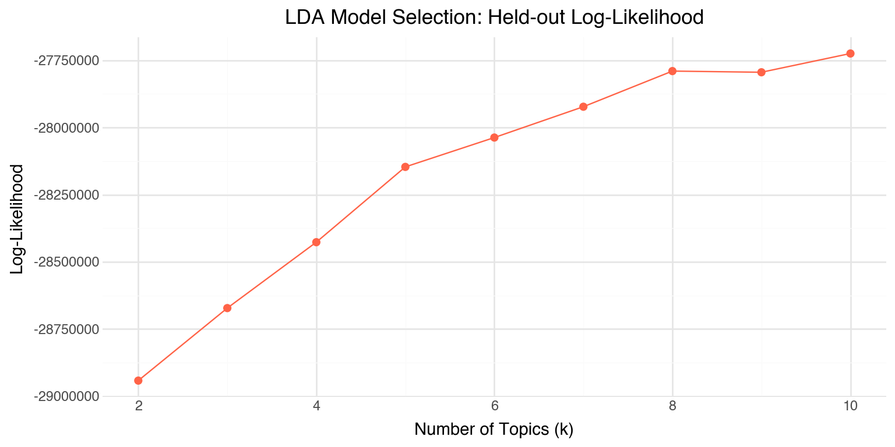
# Choose k using minimum held-out perplexity
best_k = int(lda_eval_df.loc[lda_eval_df["perplexity"].idxmin(), "n_topics"])
print(f"Chosen number of topics (based on minimum held-out perplexity): {best_k}")Chosen number of topics (based on minimum held-out perplexity): 10# Fit final LDA model on all complaint narratives
vectorizer_final = CountVectorizer(
stop_words=list(lda_stop_words),
token_pattern=r"(?u)\b[a-zA-Z]{3,}\b",
max_df=0.95,
min_df=5,
max_features=5000
)
X_full = vectorizer_final.fit_transform(lda_df["Consumer complaint narrative"])
lda_final = LatentDirichletAllocation(
n_components=best_k,
random_state=65,
max_iter=10,
learning_method="batch"
)
lda_final.fit(X_full)
feature_names = vectorizer_final.get_feature_names_out()
# Display top 10 words for each topic
topic_rows = []
for topic_idx, topic in enumerate(lda_final.components_):
top_indices = topic.argsort()[:-11:-1]
for rank, idx in enumerate(top_indices, start=1):
topic_rows.append({
"topic": f"Topic {topic_idx + 1}",
"rank": rank,
"word": feature_names[idx],
"weight": topic[idx]
})
topic_words_df = pd.DataFrame(topic_rows)
topic_words_df = topic_words_df.sort_values(["topic", "rank"])
display(topic_words_df)
# Print each topic separately (one block per topic)
for t in range(1, best_k + 1):
topic_label = f"Topic {t}"
topic_slice = topic_words_df[topic_words_df["topic"] == topic_label]
print(f"\n{topic_label} - Top 10 words")
if topic_slice.empty:
print("No topic found for this index.")
else:
print(", ".join(topic_slice["word"].tolist()))
display(topic_slice[["rank", "word", "weight"]])
# Compare discovered topics with actual product categories
doc_topic_dist = lda_final.transform(X_full)
lda_df["dominant_topic"] = [f"Topic {i + 1}" for i in doc_topic_dist.argmax(axis=1)]
top_products = lda_df["Product"].value_counts().head(10).index
compare_df = lda_df[lda_df["Product"].isin(top_products)].copy()
topic_product_counts = (
compare_df.groupby(["Product", "dominant_topic"])
.size()
.reset_index(name="count")
)
display(topic_product_counts.head(20))
(
ggplot(topic_product_counts, aes(x="Product", y="count", fill="dominant_topic"))
+ geom_col(position="fill")
+ coord_flip()
+ labs(
title="Topic Composition by Product Category (Top 10 Products)",
x="Product",
y="Proportion",
fill="Dominant Topic"
)
+ theme_minimal()
+ theme(figure_size=(10, 7), axis_text_y=element_text(size=8))
)| topic | rank | word | weight | |
|---|---|---|---|---|
| 0 | Topic 1 | 1 | credit | 16875.606732 |
| 1 | Topic 1 | 2 | late | 13294.171384 |
| 2 | Topic 1 | 3 | system | 11081.830512 |
| 3 | Topic 1 | 4 | act | 10439.284991 |
| 4 | Topic 1 | 5 | banking | 10328.409450 |
| ... | ... | ... | ... | ... |
| 85 | Topic 9 | 6 | told | 13879.926414 |
| 86 | Topic 9 | 7 | called | 11960.828617 |
| 87 | Topic 9 | 8 | money | 11852.551511 |
| 88 | Topic 9 | 9 | back | 10498.379138 |
| 89 | Topic 9 | 10 | payment | 10434.903551 |
100 rows × 4 columns
Topic 1 - Top 10 words
credit, late, system, act, banking, reporting, payments, fair, code, consumer| rank | word | weight | |
|---|---|---|---|
| 0 | 1 | credit | 16875.606732 |
| 1 | 2 | late | 13294.171384 |
| 2 | 3 | system | 11081.830512 |
| 3 | 4 | act | 10439.284991 |
| 4 | 5 | banking | 10328.409450 |
| 5 | 6 | reporting | 9983.132908 |
| 6 | 7 | payments | 9594.679585 |
| 7 | 8 | fair | 8758.505401 |
| 8 | 9 | code | 7668.734655 |
| 9 | 10 | consumer | 7467.214788 |
Topic 2 - Top 10 words
debt, account, collection, reporting, provide, documentation, credit, validation, information, proof| rank | word | weight | |
|---|---|---|---|
| 10 | 1 | debt | 51771.430588 |
| 11 | 2 | account | 30810.285388 |
| 12 | 3 | collection | 29293.962397 |
| 13 | 4 | reporting | 24245.686163 |
| 14 | 5 | provide | 20779.023127 |
| 15 | 6 | documentation | 20404.951317 |
| 16 | 7 | credit | 18865.081928 |
| 17 | 8 | validation | 18635.828935 |
| 18 | 9 | information | 14936.794815 |
| 19 | 10 | proof | 14073.221198 |
Topic 3 - Top 10 words
report, identity, credit, theft, information, fraudulent, consumer, accounts, block, request| rank | word | weight | |
|---|---|---|---|
| 20 | 1 | report | 41860.528458 |
| 21 | 2 | identity | 39833.247072 |
| 22 | 3 | credit | 36944.239524 |
| 23 | 4 | theft | 35219.262418 |
| 24 | 5 | information | 24940.696626 |
| 25 | 6 | fraudulent | 22754.769310 |
| 26 | 7 | consumer | 13827.996322 |
| 27 | 8 | accounts | 13456.799475 |
| 28 | 9 | block | 10480.124039 |
| 29 | 10 | request | 10076.668011 |
Topic 4 - Top 10 words
credit, report, accounts, information, please, inaccuracies, update, reports, accurate, inaccurate| rank | word | weight | |
|---|---|---|---|
| 30 | 1 | credit | 33115.378910 |
| 31 | 2 | report | 23018.693924 |
| 32 | 3 | accounts | 22261.249324 |
| 33 | 4 | information | 11685.808789 |
| 34 | 5 | please | 10669.511603 |
| 35 | 6 | inaccuracies | 7129.252358 |
| 36 | 7 | update | 6388.311323 |
| 37 | 8 | reports | 6033.798720 |
| 38 | 9 | accurate | 6015.108321 |
| 39 | 10 | inaccurate | 5937.184747 |
Topic 5 - Top 10 words
account, bank, year, funds, dispute, card, payment, loan, despite, without| rank | word | weight | |
|---|---|---|---|
| 40 | 1 | account | 20707.663299 |
| 41 | 2 | bank | 16778.379380 |
| 42 | 3 | year | 13331.018886 |
| 43 | 4 | funds | 11320.420712 |
| 44 | 5 | dispute | 11147.019974 |
| 45 | 6 | card | 10914.719769 |
| 46 | 7 | payment | 10201.978384 |
| 47 | 8 | loan | 9752.393197 |
| 48 | 9 | despite | 8196.610585 |
| 49 | 10 | without | 8098.523645 |
Topic 6 - Top 10 words
credit, reporting, violation, account, code, fcra, system, information, data, fair| rank | word | weight | |
|---|---|---|---|
| 50 | 1 | credit | 26571.607404 |
| 51 | 2 | reporting | 24970.341885 |
| 52 | 3 | violation | 19315.495066 |
| 53 | 4 | account | 14257.876957 |
| 54 | 5 | code | 12596.453901 |
| 55 | 6 | fcra | 12479.839734 |
| 56 | 7 | system | 11842.651502 |
| 57 | 8 | information | 11574.074772 |
| 58 | 9 | data | 11286.646910 |
| 59 | 10 | fair | 10941.775648 |
Topic 7 - Top 10 words
consumer, information, reporting, section, report, agency, usc, credit, privacy, states| rank | word | weight | |
|---|---|---|---|
| 60 | 1 | consumer | 46089.471630 |
| 61 | 2 | information | 35708.023529 |
| 62 | 3 | reporting | 22840.986950 |
| 63 | 4 | section | 18967.706849 |
| 64 | 5 | report | 18810.929631 |
| 65 | 6 | agency | 17635.385104 |
| 66 | 7 | usc | 15817.571029 |
| 67 | 8 | credit | 13070.066473 |
| 68 | 9 | privacy | 9257.166001 |
| 69 | 10 | states | 9212.161390 |
Topic 8 - Top 10 words
credit, fcra, reporting, accounts, report, information, act, inaccurate, fair, accuracy| rank | word | weight | |
|---|---|---|---|
| 70 | 1 | credit | 78869.041372 |
| 71 | 2 | fcra | 52290.094520 |
| 72 | 3 | reporting | 52102.142152 |
| 73 | 4 | accounts | 36024.809129 |
| 74 | 5 | report | 30108.826354 |
| 75 | 6 | information | 29607.154555 |
| 76 | 7 | act | 28305.611473 |
| 77 | 8 | inaccurate | 26111.958618 |
| 78 | 9 | fair | 24503.146377 |
| 79 | 10 | accuracy | 20594.518800 |
Topic 9 - Top 10 words
account, card, would, credit, bank, told, called, money, back, payment| rank | word | weight | |
|---|---|---|---|
| 80 | 1 | account | 34501.701069 |
| 81 | 2 | card | 14476.700425 |
| 82 | 3 | would | 14161.110870 |
| 83 | 4 | credit | 14149.861894 |
| 84 | 5 | bank | 13937.547024 |
| 85 | 6 | told | 13879.926414 |
| 86 | 7 | called | 11960.828617 |
| 87 | 8 | money | 11852.551511 |
| 88 | 9 | back | 10498.379138 |
| 89 | 10 | payment | 10434.903551 |
Topic 10 - Top 10 words
account, balance, credit, date, late, payment, reporting, opened, xxxxxxxx, reported| rank | word | weight | |
|---|---|---|---|
| 90 | 1 | account | 108486.525219 |
| 91 | 2 | balance | 62670.430387 |
| 92 | 3 | credit | 62500.947781 |
| 93 | 4 | date | 58280.489815 |
| 94 | 5 | late | 50767.616707 |
| 95 | 6 | payment | 49363.391031 |
| 96 | 7 | reporting | 43938.910304 |
| 97 | 8 | opened | 38212.355837 |
| 98 | 9 | xxxxxxxx | 37484.883656 |
| 99 | 10 | reported | 37181.817771 |
| Product | dominant_topic | count | |
|---|---|---|---|
| 0 | Checking or savings account | Topic 1 | 2 |
| 1 | Checking or savings account | Topic 10 | 25 |
| 2 | Checking or savings account | Topic 2 | 42 |
| 3 | Checking or savings account | Topic 3 | 36 |
| 4 | Checking or savings account | Topic 4 | 3 |
| 5 | Checking or savings account | Topic 5 | 3272 |
| 6 | Checking or savings account | Topic 6 | 2 |
| 7 | Checking or savings account | Topic 7 | 2 |
| 8 | Checking or savings account | Topic 8 | 29 |
| 9 | Checking or savings account | Topic 9 | 4204 |
| 10 | Credit card | Topic 1 | 23 |
| 11 | Credit card | Topic 10 | 392 |
| 12 | Credit card | Topic 2 | 238 |
| 13 | Credit card | Topic 3 | 169 |
| 14 | Credit card | Topic 4 | 38 |
| 15 | Credit card | Topic 5 | 3138 |
| 16 | Credit card | Topic 6 | 5 |
| 17 | Credit card | Topic 7 | 19 |
| 18 | Credit card | Topic 8 | 114 |
| 19 | Credit card | Topic 9 | 3342 |
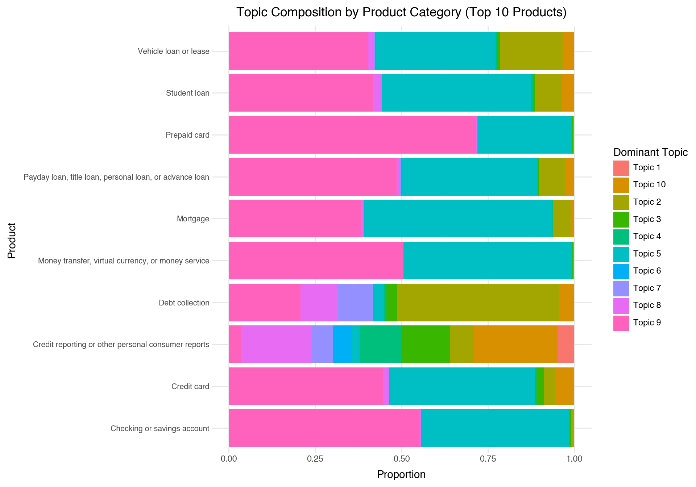
Summary:
Based on the held-out perplexity and log-likelihood evaluation, we selected 10 topics for the final model.
The visualization demonstrates a strong alignment between the discovered topics and the actual product categories:
- Loans (Topic 4): There is a very clear “Loan” theme (Topic 4) that dominates Mortgage, Student loan, and Vehicle loan or lease. This suggests the model successfully grouped these distinct products under a shared vocabulary of loan-related terms.
- Accounts (Topic 9): Products like Checking or savings account, Prepaid card, and Money transfer are heavily dominated by Topic 9, indicating a shared theme around account management and transactions.
- Debt Collection (Topic 2): This category shows a distinct association with Topic 2, separating it from the general loan or account topics.
- Credit Reporting: This category is the most diverse, composed of a mix of topics. This makes sense as credit reporting complaints often encompass a wide variety of issues—from identity theft to incorrect status updates—that might overlap with debt collection or loan terminology.
Overall, the LDA model successfully recovered latent themes that correspond well to the official product classifications, with clear distinctions between loans, banking services, and debt collection.
10. (5 points)
Use the vader lexicon to conduct sentiment analysis on the word tokens to determine if consumer complaints express positive, neutral, or negative sentiments. Create a histogram of the sentiment scores, and make a barplot to show the counts of tokens by sentiment category. Make another barplot to compare sentiment category counts by product categories. Make another barplot to show which words have top positive sentiment scores and which words have most negative sentiment scores. Summarize and interpret your results.
# Initialize VADER
sia = SentimentIntensityAnalyzer()
# Build token-frequency table from cleaned tokens (from Q8)
token_freq_df = pd.DataFrame(
Counter(cleaned_tokens).items(),
columns=["word", "count"]
)
# VADER compound score per unique token
token_freq_df["sentiment_score"] = token_freq_df["word"].apply(
lambda w: sia.polarity_scores(w)["compound"]
)
# Convert score to sentiment category
def get_sentiment_category(score):
if score >= 0.05:
return "Positive"
if score <= -0.05:
return "Negative"
return "Neutral"
token_freq_df["sentiment_category"] = token_freq_df["sentiment_score"].apply(get_sentiment_category)
display(token_freq_df.head())
print(f"Unique cleaned tokens scored: {token_freq_df.shape[0]}")| word | count | sentiment_score | sentiment_category | |
|---|---|---|---|---|
| 0 | macy | 54 | 0.0000 | Neutral |
| 1 | credit | 307726 | 0.3818 | Positive |
| 2 | card | 29321 | 0.0000 | Neutral |
| 3 | opened | 48303 | 0.0000 | Neutral |
| 4 | name | 27866 | 0.0000 | Neutral |
Unique cleaned tokens scored: 36781# Histogram of sentiment scores (weighted by token counts)
(
ggplot(token_freq_df, aes(x="sentiment_score", weight="count"))
+ geom_histogram(bins=40, fill="steelblue", color="white", alpha=0.8)
+ labs(
title="Histogram of Token Sentiment Scores (VADER)",
x="VADER Compound Sentiment Score",
y="Token Count"
)
+ theme_minimal()
+ theme(figure_size=(10, 5))
)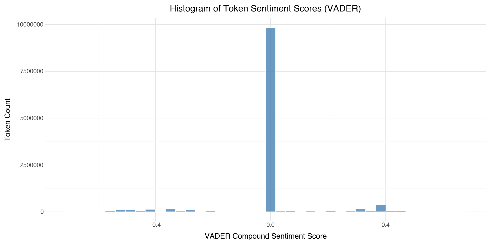
# Count tokens by sentiment category
sentiment_category_counts = (
token_freq_df.groupby("sentiment_category", as_index=False)["count"]
.sum()
)
display(sentiment_category_counts)| sentiment_category | count | |
|---|---|---|
| 0 | Negative | 936586 |
| 1 | Neutral | 9879697 |
| 2 | Positive | 965234 |
(
ggplot(sentiment_category_counts, aes(x="sentiment_category", y="count", fill="sentiment_category"))
+ geom_col()
+ labs(
title="Token Counts by Sentiment Category",
x="Sentiment Category",
y="Token Count"
)
+ theme_minimal()
+ theme(figure_size=(7, 5))
)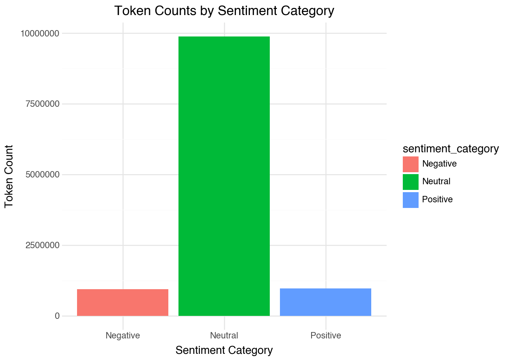
def clean_tokens_for_sentiment(text):
if pd.isna(text):
return []
tokens = word_tokenize(str(text).lower())
return [
token for token in tokens
if token not in stop_words
and not token.isdigit()
and len(token) > 2
and token.isalpha()
]
# Cache token sentiment scores for speed
token_score_lookup = dict(zip(token_freq_df["word"], token_freq_df["sentiment_score"]))
product_sentiment_counter = Counter()
cfpb_sentiment_df = cfpb_df[["Product", "Consumer complaint narrative"]].dropna(
subset=["Product", "Consumer complaint narrative"]
).copy()
for _, row in cfpb_sentiment_df.iterrows():
product = row["Product"]
tokens = clean_tokens_for_sentiment(row["Consumer complaint narrative"])
for token in tokens:
score = token_score_lookup.get(token)
if score is None:
score = sia.polarity_scores(token)["compound"]
token_score_lookup[token] = score
category = get_sentiment_category(score)
product_sentiment_counter[(product, category)] += 1
product_sentiment_counts = pd.DataFrame(
[
{"Product": k[0], "sentiment_category": k[1], "count": v}
for k, v in product_sentiment_counter.items()
]
)
top_products = (
cfpb_sentiment_df["Product"].value_counts().head(10).index.tolist()
)
product_sentiment_plot_df = product_sentiment_counts[
product_sentiment_counts["Product"].isin(top_products)
].copy()
display(product_sentiment_plot_df.head(20))
(
ggplot(
product_sentiment_plot_df,
aes(x="Product", y="count", fill="sentiment_category")
)
+ geom_col(position="fill")
+ coord_flip()
+ labs(
title="Sentiment Category Composition by Product (Top 10 Products)",
x="Product",
y="Proportion",
fill="Sentiment"
)
+ theme_minimal()
+ theme(figure_size=(10, 7), axis_text_y=element_text(size=8))
)| Product | sentiment_category | count | |
|---|---|---|---|
| 0 | Credit card | Neutral | 694798 |
| 1 | Credit card | Positive | 63874 |
| 2 | Credit card | Negative | 60133 |
| 3 | Credit reporting or other personal consumer re... | Neutral | 6282481 |
| 4 | Credit reporting or other personal consumer re... | Negative | 618401 |
| 5 | Credit reporting or other personal consumer re... | Positive | 668264 |
| 6 | Student loan | Neutral | 100313 |
| 7 | Student loan | Negative | 6653 |
| 8 | Student loan | Positive | 7936 |
| 9 | Checking or savings account | Neutral | 717954 |
| 10 | Checking or savings account | Negative | 57088 |
| 11 | Debt collection | Negative | 112214 |
| 12 | Debt collection | Neutral | 1057914 |
| 13 | Debt collection | Positive | 106156 |
| 14 | Vehicle loan or lease | Negative | 17562 |
| 15 | Vehicle loan or lease | Neutral | 223309 |
| 16 | Vehicle loan or lease | Positive | 16791 |
| 17 | Mortgage | Neutral | 346753 |
| 18 | Mortgage | Negative | 27139 |
| 19 | Mortgage | Positive | 22805 |
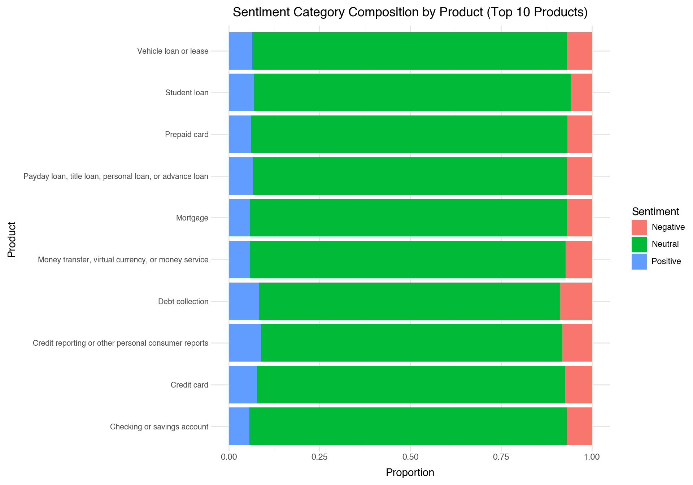
# Keep words with reasonable frequency to avoid one-off noise
sentiment_word_df = token_freq_df[token_freq_df["count"] >= 50].copy()
top_positive_words = sentiment_word_df.sort_values(
["sentiment_score", "count"], ascending=[False, False]
).head(15).copy()
top_positive_words["polarity"] = "Most Positive"
top_negative_words = sentiment_word_df.sort_values(
["sentiment_score", "count"], ascending=[True, False]
).head(15).copy()
top_negative_words["polarity"] = "Most Negative"
top_sentiment_words = pd.concat(
[top_positive_words, top_negative_words],
ignore_index=True
)
display(
top_sentiment_words[["polarity", "word", "sentiment_score", "count"]]
)
(
ggplot(
top_sentiment_words,
aes(x="reorder(word, sentiment_score)", y="sentiment_score", fill="polarity")
)
+ geom_col()
+ coord_flip()
+ facet_wrap("~polarity", scales="free_y")
+ labs(
title="Words with Highest Positive and Most Negative Sentiment Scores",
x="Word",
y="VADER Compound Score"
)
+ theme_minimal()
+ theme(figure_size=(12, 7))
)| polarity | word | sentiment_score | count | |
|---|---|---|---|---|
| 0 | Most Positive | best | 0.6369 | 1955 |
| 1 | Most Positive | freedom | 0.6369 | 782 |
| 2 | Most Positive | love | 0.6369 | 51 |
| 3 | Most Positive | great | 0.6249 | 312 |
| 4 | Most Positive | outstanding | 0.6124 | 1188 |
| 5 | Most Positive | honored | 0.5859 | 334 |
| 6 | Most Positive | successful | 0.5859 | 297 |
| 7 | Most Positive | excellent | 0.5719 | 456 |
| 8 | Most Positive | perfect | 0.5719 | 346 |
| 9 | Most Positive | reward | 0.5719 | 250 |
| 10 | Most Positive | success | 0.5719 | 234 |
| 11 | Most Positive | happy | 0.5719 | 221 |
| 12 | Most Positive | perfected | 0.5719 | 60 |
| 13 | Most Positive | positive | 0.5574 | 1473 |
| 14 | Most Positive | supreme | 0.5574 | 182 |
| 15 | Most Negative | dead | -0.6486 | 87 |
| 16 | Most Negative | devastating | -0.6486 | 79 |
| 17 | Most Negative | abusive | -0.6369 | 1470 |
| 18 | Most Negative | abuse | -0.6369 | 542 |
| 19 | Most Negative | kia | -0.6369 | 157 |
| 20 | Most Negative | worst | -0.6249 | 217 |
| 21 | Most Negative | disaster | -0.6249 | 212 |
| 22 | Most Negative | crisis | -0.6249 | 113 |
| 23 | Most Negative | devastated | -0.6124 | 83 |
| 24 | Most Negative | death | -0.5994 | 277 |
| 25 | Most Negative | anguish | -0.5994 | 178 |
| 26 | Most Negative | fraud | -0.5859 | 20888 |
| 27 | Most Negative | scams | -0.5859 | 123 |
| 28 | Most Negative | ruin | -0.5859 | 66 |
| 29 | Most Negative | negative | -0.5719 | 11095 |
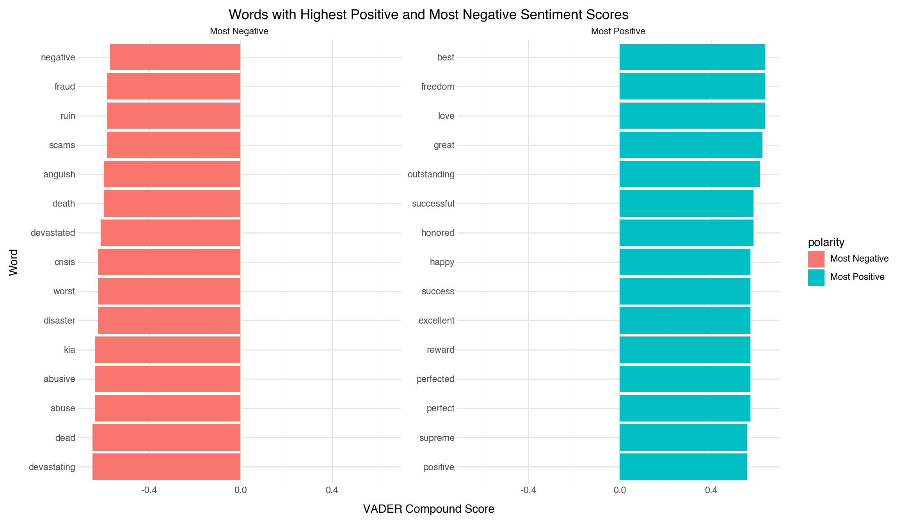
Summary:
Summary:
- Sentiment Distribution: The histogram shows a massive spike at 0.0, indicating that the vast majority of tokens are neutral. This is expected in financial narratives which contain many factual terms.
- Category Counts: Token counts by sentiment category bar plot confirms this dominance: Neutral tokens are way more than Positive and Negative tokens. Surprisingly, the counts for positive and negative tokens are visually balanced.
- Product Sentiment: Across all top products, the sentiment composition is remarkably consistent—dominated by neutral terms. However, Debt collection and Credit reporting product categories show slightly larger proportions of negative sentiment compared to products like Checking or savings account, which is intuitive given the adversarial nature of those complaints.
- Top Words:
- Positive: Words like “best”, “freedom”, “great”, “outstanding”, and “success” have high positive scores.
- Negative: Words like “negative”, “fraud”, “scams”, “abusive”, and “devastating” have strong negative scores.
- “fraud” and “negative” appear frequently, highlighting key points in customer complaint narratives.
11. (2 points)
Conduct sentence-level tokenization, summarize the number of sentences, and the average number of sentences by complaint.
# Keep complaints with narratives
cfpb_sentence_df = cfpb_df[["Consumer complaint narrative"]].dropna(
subset=["Consumer complaint narrative"]
).copy()
# Sentence-level tokenization (lab style)
def get_sentence_counts(text):
if pd.isna(text):
return 0
return len(sent_tokenize(str(text)))
cfpb_sentence_df["num_sentences"] = cfpb_sentence_df["Consumer complaint narrative"].apply(
get_sentence_counts
)
# Summaries requested in Q11
total_sentences = int(cfpb_sentence_df["num_sentences"].sum())
avg_sentences_per_complaint = cfpb_sentence_df["num_sentences"].mean()
print(f"Total number of sentences: {total_sentences}")
print(f"Average number of sentences per complaint: {avg_sentences_per_complaint:.2f}")
display(cfpb_sentence_df["num_sentences"].describe())Total number of sentences: 1174776
Average number of sentences per complaint: 8.63count 136104.000000
mean 8.631458
std 10.467573
min 1.000000
25% 3.000000
50% 6.000000
75% 10.000000
max 379.000000
Name: num_sentences, dtype: float64Summary:
- Total Sentences: There are 1174776 sentences in total across all consumer complaint narratives.
- Average Sentences per Complaint: On average, each complaint contains approximately np.float64(8.63) sentences.
12. (4 points)
Conduct sentiment analysis of the sentence tokens. Like above, visualize the histogram of the sentiment scores, categorize sentiments into negative, neutral, positive and visualize counts with a barplot as well as a barplot by product categories. Interpret, summarize, and discuss differences from word token sentiment analysis in Q10.
# Keep complaints with narratives and product labels
cfpb_sentence_sentiment_df = cfpb_df[["Product", "Consumer complaint narrative"]].dropna(
subset=["Product", "Consumer complaint narrative"]
).copy()
# Reuse VADER from Q10
sentence_scores = []
sentence_sentiment_counter = Counter()
product_sentence_sentiment_counter = Counter()
for _, row in cfpb_sentence_sentiment_df.iterrows():
product = row["Product"]
sentences = sent_tokenize(str(row["Consumer complaint narrative"]))
for sent in sentences:
score = sia.polarity_scores(sent)["compound"]
sentence_scores.append(score)
category = get_sentiment_category(score)
sentence_sentiment_counter[category] += 1
product_sentence_sentiment_counter[(product, category)] += 1
sentence_score_df = pd.DataFrame({"sentiment_score": sentence_scores})
print(f"Total number of sentence sentiment scores: {len(sentence_scores)}")
display(sentence_score_df.head())Total number of sentence sentiment scores: 1174776| sentiment_score | |
|---|---|
| 0 | 0.6369 |
| 1 | -0.2960 |
| 2 | 0.2860 |
| 3 | 0.2263 |
| 4 | 0.0000 |
# Histogram of sentence sentiment scores
(
ggplot(sentence_score_df, aes(x="sentiment_score"))
+ geom_histogram(bins=40, fill="steelblue", color="white", alpha=0.8)
+ labs(
title="Histogram of Sentence Sentiment Scores (VADER)",
x="VADER Compound Sentiment Score",
y="Count of Sentences"
)
+ theme_minimal()
+ theme(figure_size=(10, 5))
)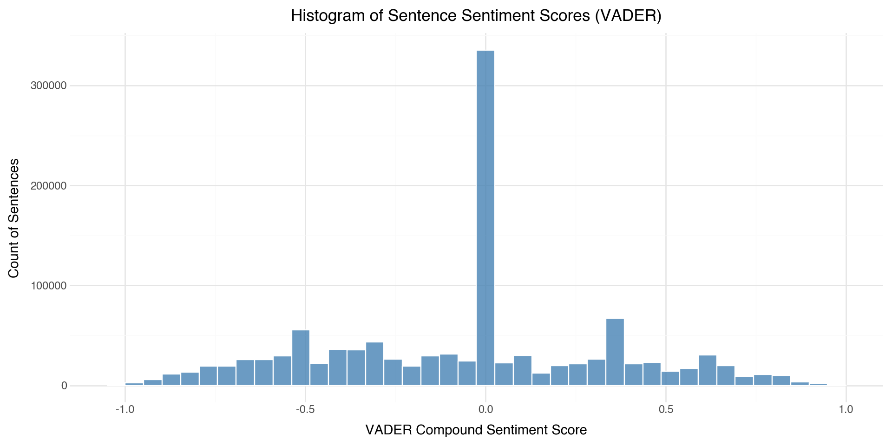
# Sentence counts by sentiment category
sentence_sentiment_counts = pd.DataFrame(
[
{"sentiment_category": k, "count": v}
for k, v in sentence_sentiment_counter.items()
]
)
display(sentence_sentiment_counts)
(
ggplot(sentence_sentiment_counts, aes(x="sentiment_category", y="count", fill="sentiment_category"))
+ geom_col()
+ labs(
title="Sentence Counts by Sentiment Category",
x="Sentiment Category",
y="Count of Sentences"
)
+ theme_minimal()
+ theme(figure_size=(7, 5))
)| sentiment_category | count | |
|---|---|---|
| 0 | Positive | 350930 |
| 1 | Negative | 462462 |
| 2 | Neutral | 361384 |
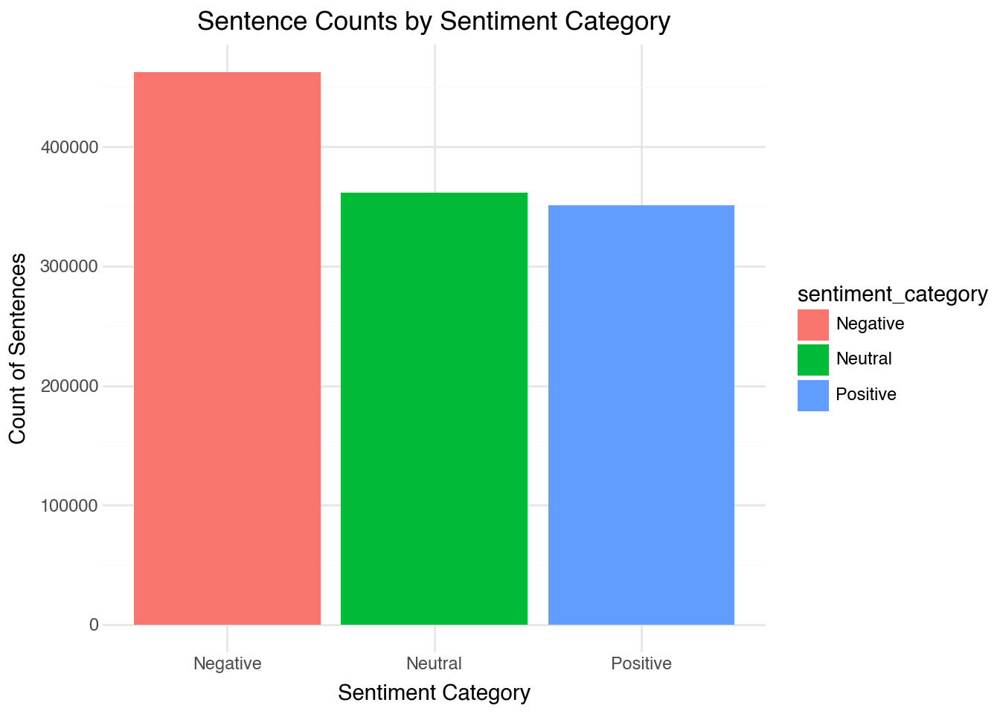
# Sentence sentiment composition by product category (top 10 products)
product_sentence_sentiment_counts = pd.DataFrame(
[
{"Product": k[0], "sentiment_category": k[1], "count": v}
for k, v in product_sentence_sentiment_counter.items()
]
)
top_products_q12 = cfpb_sentence_sentiment_df["Product"].value_counts().head(10).index.tolist()
product_sentence_sentiment_plot_df = product_sentence_sentiment_counts[
product_sentence_sentiment_counts["Product"].isin(top_products_q12)
].copy()
display(product_sentence_sentiment_plot_df.head(20))| Product | sentiment_category | count | |
|---|---|---|---|
| 0 | Credit card | Positive | 27017 |
| 1 | Credit card | Negative | 30331 |
| 2 | Credit reporting or other personal consumer re... | Positive | 232248 |
| 3 | Credit reporting or other personal consumer re... | Neutral | 214376 |
| 4 | Credit reporting or other personal consumer re... | Negative | 297635 |
| 5 | Student loan | Neutral | 4307 |
| 6 | Student loan | Negative | 3589 |
| 7 | Student loan | Positive | 3492 |
| 8 | Checking or savings account | Neutral | 31166 |
| 9 | Checking or savings account | Negative | 33018 |
| 10 | Debt collection | Negative | 53682 |
| 11 | Credit card | Neutral | 26449 |
| 12 | Vehicle loan or lease | Negative | 9258 |
| 13 | Vehicle loan or lease | Neutral | 9508 |
| 14 | Vehicle loan or lease | Positive | 6897 |
| 15 | Debt collection | Neutral | 40338 |
| 16 | Debt collection | Positive | 37868 |
| 17 | Mortgage | Positive | 10000 |
| 18 | Mortgage | Neutral | 15503 |
| 19 | Mortgage | Negative | 14053 |
(
ggplot(
product_sentence_sentiment_plot_df,
aes(x="Product", y="count", fill="sentiment_category")
)
+ geom_col(position="fill")
+ coord_flip()
+ labs(
title="Sentence Sentiment Composition by Product (Top 10 Products)",
x="Product",
y="Proportion",
fill="Sentiment"
)
+ theme_minimal()
+ theme(figure_size=(10, 7), axis_text_y=element_text(size=8))
)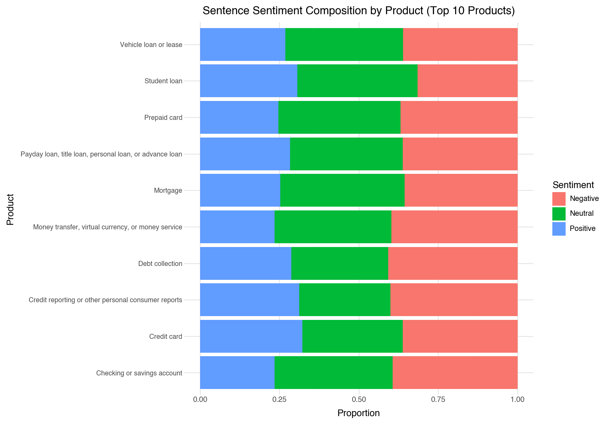
Summary:
- Sentiment Distribution: The histogram shows a trimodal distribution with spikes at 0.0 (neutral), and significant density around highly positive (+0.4 to +0.8) and highly negative (-0.4 to -0.8) scores. This indicates that sentences carry much stronger emotional signals than individual words.
- Category Counts: Unlike the token-level analysis (Q10) where neutral tokens dominated, the sentence-level analysis shows that Negative sentences are actually the most frequent category, followed by Neutral and Positive. This is a major shift—complaint narratives are fundamentally negative stories, and sentence-level scoring correctly captures this tone where word-level scoring diluted it with neutral stopwords.
- Product Sentiment: The stacked bar plot reveals that Debt collection, Credit reporting, and Vehicle loan or lease have the highest proportions of negative sentences. Conversely, Student loan and Prepaid card categories show comparatively higher proportions of positive sentences, though negative sentiment remains substantial across all categories.
- Comparison with Q10:
- Q10 (Word-level): Dominated by neutral tokens, masking the complaint’s intent.
- Q12 (Sentence-level): Dominated by negative sentences, accurately reflecting the “complaint” nature of the dataset.
- Conclusion: Sentence-level analysis is far superior for understanding customer sentiment in this context because it captures the meaning of phrases rather than just counting isolated words.